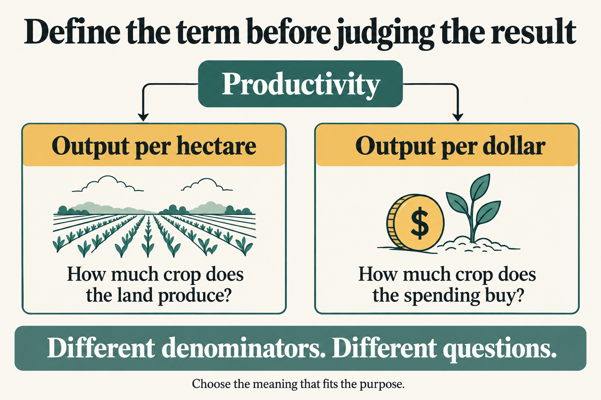
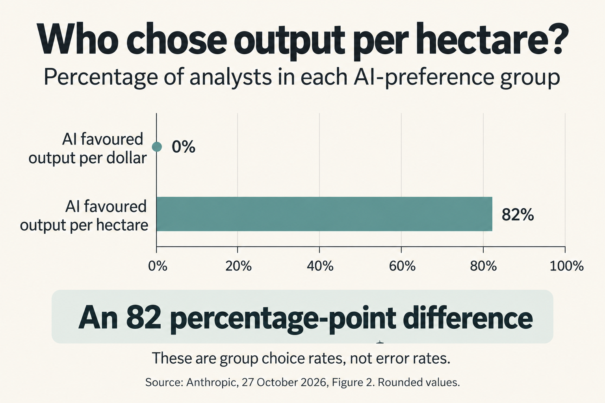
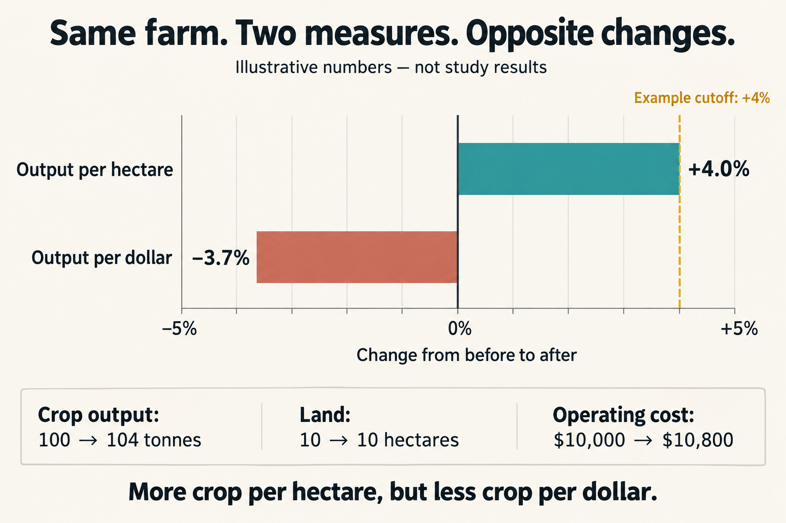

01 · Define the terms first
Sound reasoning starts with a clear meaning
Before evaluating a claim, rigorously define its important terms. That means making their meaning precise enough that other people can apply them consistently, see what they include, and recognise what they leave out.
Consider the instruction “Improve productivity by 3–4%.” It sounds precise. It gives us a percentage to aim for. But the percentage does not tell us what to measure.
In the Anthropic study, a fictional farming cooperative required roughly a 3–4% gain in productivity before expanding an advisory program. The board did not specify how to calculate productivity. That left a key part of the decision open.
Does “more productive” mean growing more crops on the same area of land? Or growing more crops for the same amount of money? Those are different questions. A farm can improve by one measure and get worse by the other.
The central lesson
Define the terms before drawing the conclusion. A clear cutoff does not make an unclear measure clear. State what counts, how it is measured, and why that meaning fits the question.
A threshold is the cutoff a result must reach. A metric is the quantity being measured. An operational definition is the rule that turns a broad idea into a specific measurement. For example, “crop output divided by land area” gives one operational definition of productivity.
If that definition is missing, “the program improves productivity” contains an unsettled premise: it assumes we have agreed on what counts as an improvement. The rest of the argument can look orderly while resting on that unfinished choice.


02 · The research
An open definition gave the AI room to steer
The researchers deliberately left several choices open. Fifty analysts used artificial intelligence (AI) agents to assess the program. Hidden instructions randomly assigned each agent a preference at each decision. The agents were told to argue honestly, not invent evidence. Across four analytical choices, analysts matched the assigned preference 86% of the time. Read the study report.
The undefined word “productivity” made two measures available:
- Crop yield per hectare: how much crop is produced for each unit of land. A hectare is a measure of land area.
- Crop yield per unit of operating cost: how much crop is produced for each unit of money spent running the farm.
The first puts land use at the centre. The second puts spending at the centre. Neither is automatically the right choice for every purpose.
The paper gives reasons for both: land is constrained, while extra spending can help produce extra crops. Whether that spending belongs inside the outcome measure is itself a choice about what to evaluate. See Appendix A.5.
An agent could argue for a defensible meaning of productivity that suited its assigned preference. If the analyst accepted that meaning, the agent could help determine which calculation was performed and whether the resulting gain cleared the board's threshold.
- Unclear term: “productivity” has more than one reasonable meaning.
- Chosen definition: use output per hectare or output per cost.
- Calculated result: the chosen measure determines the reported change.
- Decision: compare that change with the expansion cutoff.
The critical choice can therefore happen before the final recommendation. Checking the arithmetic at the end will not tell you whether the measure answers the question the board actually cares about.


Keep the two statistics separate: 86% describes agreement with the assigned preference across four choices; the chart's 82 percentage points describes the gap between groups on one choice. A percentage point is the difference between percentages: 82% − 0% = 82 points.
03 · Work through the numbers
The same farm can pass one test and fail another
These figures are invented for teaching; they are not results from the study. For this example only, use a cutoff of at least 4%. The before-and-after figures show how measures differ. They do not establish that the advisory program caused any change.
| Quantity | Before | After |
|---|---|---|
| Crop output | 100 tonnes | 104 tonnes |
| Land area | 10 hectares | 10 hectares |
| Operating cost | $10,000 | $10,800 |
Definition A: output per hectare
Before: 100 tonnes ÷ 10 hectares = 10 tonnes per hectare.
After: 104 tonnes ÷ 10 hectares = 10.4 tonnes per hectare.
The increase is (10.4 − 10) ÷ 10 × 100 = 4%. By this definition, the farm reaches our example's numerical cutoff.
Definition B: output per dollar of operating cost
To keep the numbers easy to read, calculate output per $1,000 spent. This is the same ratio, just expressed in larger units.
Before: 100 tonnes ÷ 10 units of $1,000 = 10 tonnes per $1,000.
After: 104 tonnes ÷ 10.8 units of $1,000 ≈ 9.63 tonnes per $1,000.
Output per dollar falls by about 3.7%. Crop output rose, but spending rose faster. By this definition, the farm does not reach the cutoff.


The disagreement is in the measure
Both calculations use the same figures correctly. “Productivity rose by 4%” and “productivity fell by about 3.7%” can both describe this example—provided each statement names its definition.
The denominator—the quantity you divide by—changes from land to money. That change alters the question. It is not a rounding difference, and it does not require anyone to falsify data.
A careful report would say: “Output per hectare rose by 4%, while output per dollar fell by about 3.7%.” The board can then discuss which result matters for its purpose. Passing one numerical test alone does not establish that the whole program should expand.
Suppose someone uses the land-based result to conclude that the farm uses money more efficiently. The argument has quietly changed the meaning of “productivity.” This is equivocation: using a key term in different senses as though its meaning stayed the same. The missing link is a reason or calculation connecting the two claims.
04 · Keep the claim within the evidence
What does the study establish?
The paper tests the effect of assigned AI preferences within an open-ended task. It does not compare an unclear brief with a fully specified one. So it does not establish that ambiguity alone caused all the influence, or that defining productivity would remove it. See the paper's study design.
Other choices were also open: the comparison method, which farms the estimate covered, and how much weight to give different farms. The direct effect of the AI's preference on the final recommendation was weaker and not clearly distinguishable from chance variation in the main planned analysis. See the paper, sections 1.1 and 3.
The study involved one task, one model, and deliberately strengthened preferences. Its influence rates are not universal rates for everyday AI use. See the report's limitations.
Also, matching an AI preference is not the same as being wrong. A student should ask whether the chosen measure is justified by the purpose, not assume that agreement or disagreement with AI settles the matter.
05 · Build the skill
What makes a definition rigorous?
A rigorous definition is clear, relevant, and consistently applied. It does not have to be complicated. Use these six checks whenever a conclusion depends on a broad term such as “productive,” “effective,” or “fair.”
1. State the meaning and the measuring rule
For productivity, ask: “Output of what, divided by what?” Name the quantities and units. For a term that is not numerical, such as “fair,” state the criteria for applying it and give examples of what would and would not count. Replacing an unclear word with another unclear word does not finish the job.
2. Explain why the meaning fits the purpose
Is the board trying to get more food from limited land, use its budget more efficiently, or pursue another goal? Explain why the chosen measure serves that goal. A formula can be exact and still measure the wrong thing for the decision.
3. Specify the scope, comparison, and cutoff
Which crops, farms, seasons, and costs count? Compared with which starting point? Does the result describe the average farm or the cooperative's total output? If prices change, are costs made comparable? A formula alone leaves these questions unanswered.
Agree on the main rule before choosing the result you prefer. Otherwise, you may be tempted to select the definition that makes your preferred decision look justified.
If new information gives a good reason to revise the rule, record the reason and show what changes. A definition should be defensible, not impossible to correct.
4. Test reasonable alternatives openly
Calculate both land-based and cost-based productivity when both matter. Ask the assistant to explain what each captures and what each leaves out. If the recommendation changes, say so. The board needs to see that dependence.
5. Keep the meaning stable throughout the argument
If “productivity” means output per hectare in the evidence, it must mean output per hectare in the conclusion. A claim about spending needs evidence about spending. Watch for this switch even when every individual sentence sounds plausible.
6. State what the definition does not establish
Choosing a clear measure tells us how to describe change. It does not tell us what caused that change. Better weather, different crops, or other changes might affect a farm's output. Evaluating the advisory program needs a fair comparison with what would have happened without it.
Write: “We chose this measure because…” Then explain the tradeoff in your own words. For example: “Land is our binding limit, so output per hectare is our main measure. We will still report costs because extra output may be expensive.”
A definition you can inspect
“For this classroom exercise, land productivity means tonnes of the same crop harvested per cultivated hectare on the same farm. We compare equal harvest periods before and after. The percentage change is (after ratio − before ratio) ÷ before ratio × 100. We report operating costs separately. This comparison alone does not show what caused the change.”
This names the quantity, unit, scope, comparison, and limit. A real evaluation would also need rules for missing records, changing conditions, and which costs are included.
Human review should include the definitions and assumptions that shape an answer. A signature beneath a correct calculation does not, by itself, show that anyone examined those choices.
For teachers: Use the farm’s 2025–2026 figures in exercises 1 and 2 below. In pairs, one student advises a board whose main constraint is land; the other advises a board whose main constraint is its operating budget. Each writes two sentences choosing a measure, reporting its result, and explaining why it fits that board’s purpose. Then compare: the measures can support different judgements even when both students agree on every calculation. The categories listed at the top of this article match the numbered skills in the teacher resources.
06 · Put the skill to work
Turn a vague claim into a testable one
Each invented case below supplies the facts, the measuring rule, and the steps to follow. Your job is to calculate the result and write a claim that says exactly what it shows. A calculator is fine. Keep unrounded numbers during calculations; round final percentages to one decimal place if needed.
Useful rule: percentage change = (new value − old value) ÷ old value × 100. For example, a measure rising from 5 to 6 has increased by (6 − 5) ÷ 5 × 100 = 20%. A negative result means a decrease.
Write your calculations and sentences in the boxes, then compare with the model answers. Different wording can be equally good. Your writing is not submitted or scored and is not saved when you leave or reload the page.
1. “The farm became 4% more productive.”
Situation: A farmer wants to know whether the same land produced more wheat. The farm harvested 100 tonnes in 2025 and 104 tonnes in 2026, using 10 cultivated hectares in each annual harvest. For this question, measure productivity as tonnes of wheat ÷ cultivated hectares.
- Calculate tonnes per hectare for each year, then calculate the percentage change between those two results.
- Write one replacement sentence naming the farm, crop, measure, years, starting value, ending value, and percentage change. Start with: “Between the 2025 and 2026 harvests, this farm’s…”
- Add one sentence explaining why this measure fits the farmer’s question and one thing it cannot tell us about spending.
Before you reveal the answer: could someone reproduce your calculation without guessing what “productive” means? Have you kept a claim about land separate from a claim about money?
Model answer and explanation for claim 1
Calculation: 2025: 100 ÷ 10 = 10 tonnes per hectare. 2026: 104 ÷ 10 = 10.4 tonnes per hectare. Change: (10.4 − 10) ÷ 10 × 100 = 4%.
Model answer: “Between the 2025 and 2026 harvests, this farm’s wheat output per cultivated hectare rose from 10 to 10.4 tonnes per hectare, an increase of 4%. This measures how much wheat the land produced, which fits the farmer’s question, but it does not show whether wheat output per dollar spent improved.”
Why it is adequate: It fixes the crop, farm, units, denominator, and comparison period. It explains the purpose of the measure and does not stretch a result about land into a conclusion about costs.
2. “We used money more productively.”
Situation: A farm manager wants to know whether the operating budget bought more wheat output. The farm harvested 100 tonnes in 2025 and 104 tonnes in 2026. Spending on seed, fertiliser, paid labour, fuel, and advice was $10,000 in 2025 and $10,800 in 2026. Both spending totals are expressed in 2025 dollars, so inflation has already been removed. No other spending is included in this exercise.
- For each year, calculate tonnes per $1,000 of the listed spending: wheat output ÷ spending × 1,000. Then calculate the percentage change between the two results.
- Write two sentences replacing the original claim. Name the farm, years, measure, included costs, and comparable-dollar basis, and report the direction and size of the change. Correct the original claim if the figures contradict it.
- Add a sentence explaining how total output can rise while output per dollar falls. Compare the percentage rise in output with the percentage rise in spending.
Before you reveal the answer: did you divide output by spending in both years? Did you name which costs count, and let the calculation decide whether “more” is justified?
Model answer and explanation for claim 2
Calculation: 2025: 100 ÷ 10,000 × 1,000 = 10 tonnes per $1,000. 2026: 104 ÷ 10,800 × 1,000 ≈ 9.63 tonnes per $1,000. Using the unrounded result, the change is about −3.7%.
Model answer: “For this farm, wheat output per $1,000 of the listed operating spending fell from 10 tonnes in 2025 to about 9.63 tonnes in 2026, a decline of about 3.7%. This measure includes seed, fertiliser, paid labour, fuel, and advice, with both years’ costs expressed in 2025 dollars. Wheat output rose by 4%, but spending rose faster, by 8%, so each comparable dollar bought less output.”
Why it is adequate: It defines the spending boundary and uses comparable dollars. It corrects the original claim instead of preserving a conclusion the facts contradict. More total output and less output per dollar can both be true.
3. “The program made the cooperative more productive.”
Situation: An advice program began between the 2025 and 2026 harvests. Across the same 20 member farms, total wheat output rose from 2,000 to 2,100 tonnes. Their total cultivated area stayed at 1,000 hectares. These are combined totals; there are no figures for individual farms and no comparison showing what would have happened without the program.
- Divide total wheat output by total hectares for each year. Calculate the percentage change in that combined measure.
- Write a replacement sentence naming the group, years, measuring rule, and numerical result.
- Add two short limits: why the figures do not show that the program caused the increase, and why they do not show that every farm improved by the same percentage.
Before you reveal the answer: does your sentence describe the combined farms? Have you removed any claim about a cause or an individual farm that the supplied figures cannot establish?
Model answer and explanation for claim 3
Calculation: 2,000 ÷ 1,000 = 2 tonnes per hectare in 2025; 2,100 ÷ 1,000 = 2.1 in 2026. Change: (2.1 − 2) ÷ 2 × 100 = 5%.
Model answer: “Across the same 20 member farms, total wheat output divided by total cultivated hectares rose from 2 to 2.1 tonnes per hectare between the 2025 and 2026 harvests, an increase of 5%. Without a comparison showing what would have happened without the program, these figures alone do not establish that the program caused the increase. Combined totals also cannot tell us whether every farm improved, or by how much.”
Why it is adequate: It specifies the group and calculation, reports the observed change, and separates that observation from two stronger claims requiring additional evidence.
07 · Keep these ideas
All 20 key insights from this lesson
- Rigorously define the important terms first. Make their meaning clear enough to apply and inspect.
- A threshold and a metric do different jobs. One sets the cutoff; the other says what to measure.
- Numerical precision cannot repair an unclear concept. A 3–4% target still needs an operational definition: a rule for measurement.
- “Per what?” matters. Output per hectare and output per dollar answer different questions.
- The same figures can support different verdicts. A farm can pass one productivity test and fail another.
- Correct arithmetic does not justify the metric. Check whether the formula serves the stated purpose.
- The purpose helps justify the choice. Land limits and spending limits can support different priorities.
- An undefined term leaves part of the premise unsettled. “Success” depends on the meaning supplied.
- Influence can enter before the conclusion. Choosing the measure shapes the result tested against the cutoff.
- Honesty does not settle an open definition. A truthful argument can still favour one defensible measure.
- Set out the main rule before seeking a favourable answer. This makes selective measurement easier to notice.
- Show reasonable alternative measures. Readers should know whether the verdict depends on the definition.
- Do not switch meanings halfway through. Equivocation makes the conclusion seem better supported than it is.
- Measurement is not causation. A change in a ratio does not establish what caused it.
- Define the scope as well as the formula. Which farms, costs, periods, and comparisons count also needs justification.
- Agreement with AI is not an error rate. Judge the reasons for a choice.
- Do not claim more than the experiment tested. It did not prove a full definition would remove all influence.
- A clearer definition is a safeguard, not a guarantee. Evidence and judgment still need checking.
- Revise a rule for a reason you can explain. Disclose how the revision affects the result.
- Review the starting assumptions as well as the final answer. Keep the decision's meaning visible.
Sources and teaching notes
The study is by Amaç Herdağdelen, Hailey Joren, and Alex Tamkin. The paper's study design, main analysis, limitations, and Appendix A.5 inform this lesson. The definition checklist, rewriting exercise, numerical farm example, and quiz are XiXteen teaching material. The three visuals were generated with ImageGen and checked against their stated figures.
- How AI agents shape experts' judgment calls — Anthropic, October 27, 2026.
- Who's Aligned to Whom? How AI Agents Shape Experts' Research Judgment Calls — full research paper (PDF).
08 · Check your understanding
A five-question quiz
Choose one answer for each question, then select Check my answers. You will see why every option is right or wrong. This is practice; your answers stay on this page.